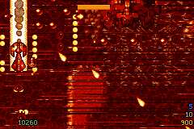
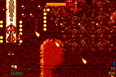

局部 waver 被套到整條 scanline，跳幀後產生高對比橫帶。

持續極端壓力只暫停幾何位移，lava 色相與完整戰鬥仍保留。
先分清楚：硬體超載，還是程式破壞畫面？
射擊與不射擊的受控 A/B 給出了清楚界線。不射擊跑到相同地圖位置， 5,908 個 display frames 只有 1 次 missed VBlank；極限連射則有 1,254 次。連射時 logic 平均 126,343 cycles、完整 render 平均 187,921 cycles，兩者相加已超過單一 LCD frame 的 280,896-cycle 預算。
DMA0 每個 HBlank 只搬四個 halfword；DMA1/2 由 Maxmod 使用，DMA3 負責一般 VBlank copy。逐項檢查 mGBA raster 行為、雙緩衝 table、 OAM 與 commit 路徑後，沒有 DMA 越界或半張 scene 被提交。正式 drop-frame scheduler 一直在重複上一張完整畫面，再提交下一張完整畫面。
因此高 drop-frame 比例是把問題放大的條件，不是橫帶本身的根因。 單純少畫幾張 scene 無法修復錯誤的整列空間近似；它只會降低問題出現 的頻率，同時犧牲本來就有限的 presentation 更新率。
真正缺口在 PC 濾鏡與 Mode 0 的尺度不同
OpenTyrian 的 lava_filter 與 water_filter 每八個水平像素計算一次 waver，只改變局部 framebuffer 樣本和鄰列色彩平均。舊 GBA adapter 因為 Mode 0 text BG 無法每八個像素安全改 scroll，只取一個樣本， 再用 HBlank DMA 把它套到整條 BG0／BG1 scanline。
正常負載時，這個近似看起來像廉價但有效的水波。極限負載讓相鄰提交 scene 跨過更多 source ticks，高對比 lava 紋理便把一列一列的位移差 顯示成醒目橫帶。硬體超載是真的，但橫帶不是非接受不可的硬體宿命。
把局部 source 行為翻成適合整列硬體的 profile
v72 仍依 OpenTyrian 原公式計算每個八像素 block 的 waver，接著對 GBA 實際 240-pixel crop 做可見像素加權平均，並套用五條 scanline 的空間 低通。左右只露出四個像素的 edge blocks 依四個像素計分，完整 blocks 則依八個像素計分，因此不是任選一個畫面中心樣本。
原公式帶有正向 DC bias；在 PC，它改變的是色彩取樣位置，不是攝影機 整體平移。GBA profile 因而移除這個 DC 分量，只保留真正的波動部分。 Lava／water 色相仍由既有 palette adapter 呈現。
- 依 source 公式建立每個八像素 block 的位移。
- 對 240-pixel 可見 crop 做精確權重平均。
- 用五列空間低通降低整列 scroll 的量化階梯。
- 移除只屬於色彩取樣的 DC 平移分量。
- 在 IRQ 與 Maxmod 啟動前建立 lava／water 兩份固定 profile。
負載遲滯：正常保留，極端才退讓
Runtime 維護 0 到 24 的 presentation pressure score。Render 被 deadline scheduler 延後、積欠超過一個 source tick，或完整 render 超過 220,000 cycles 時累加；乾淨完成的 scene 讓分數緩慢下降。進入與離開門檻不同， 避免效果在臨界點每幀開關。
強度以 Q8 小步下降與更慢速度恢復。即使到 0，停掉的也只有 scanline 幾何位移；lava／water palette、背景捲動與所有 gameplay 仍繼續。 一般不射擊測試最大壓力為 20，不會觸發 24/24 的 severe gate。
結果：畫面更穩，成本也沒有轉嫁
兩份固定 profile 改在 IRQ 與音效啟動前預算，首次遇到 lava／water 不再製造長影格。完整強度與零強度另有 fast path，避免每條 scanline 做不必要乘法；因此修正不是以更多漏幀換取較乾淨的截圖。
v73：只在 Wave 壓力中分離 Logic 與 Render
v73 再把動態調節限制在來源真正啟用 lava／water 的期間。偵測到持續 deadline miss 後，有跑 source logic 的 LCD frame 優先保留上一張完整 scene，沒有跑 logic 的 frame 才建構最新 OAM、tile cache 與 VRAM transaction。Gameplay、RNG、碰撞與音訊 tick 都沒有省略。
同一路線不開火仍只有 1 次 missed VBlank，adaptive entry 為 0；沒有 wave 的 Episode 1 短測 scope attempt 也是 0。這不是全域降幀，而是 在 GBA 已有明確超載證據時，省略永遠不會被顯示的中間 scene 建構。 剩餘 685 次來自單一完整 render 或碰撞 phase 本身仍可能超過一個 LCD frame，因此不能誠稱硬體上限已完全消失。
沒有採用的捷徑
- 沒有把 wave phase 與 held scene 分離；否則凍結的世界會自行游動。
- 沒有刪除或 cap 玩家 projectile；source 邏輯與畫面壓力保持一致。
- 沒有把遊戲邏輯降成 15 或 30 Hz；fixed timestep 仍按正常節奏前進。
- 沒有用 nearest tile 或模糊後製掩蓋錯誤。
AI 提供假說，telemetry 做最後裁決
本次把 DMA 分工、前後 A/B、OpenTyrian filter、cache telemetry 與 GBA Mode 0 限制交給 Gemini 3.1 Pro 複核。值得採用的是空間低通、 遲滯式幅度與 wave 必須跟 held scene 同步；projectile pinning 與 獨立 wave animation 則因不符合現有 cache 或畫面語意而捨棄。
最終判斷依據仍是 source code、硬體資料流、定向 ROM telemetry 與 240×160 實際畫面。AI 幫忙縮小搜尋空間，但不替專案發明新規格。